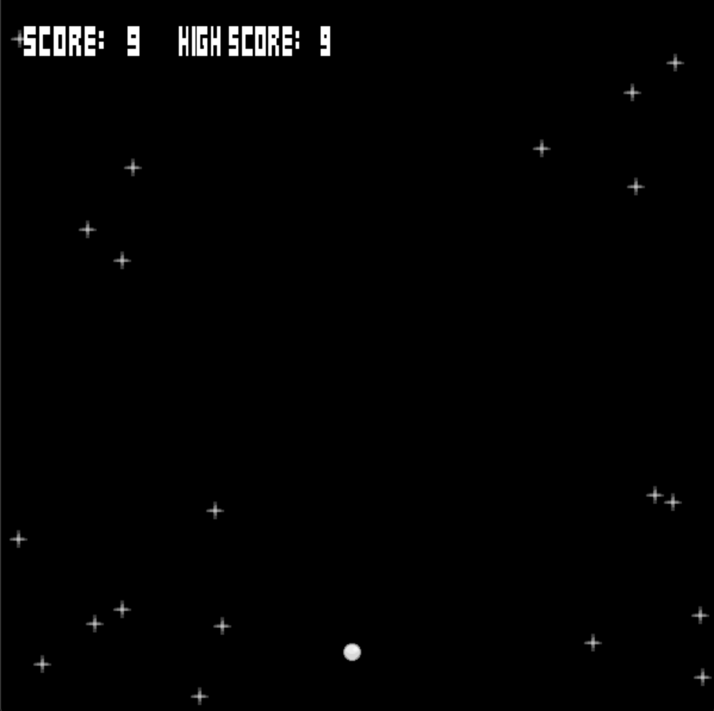
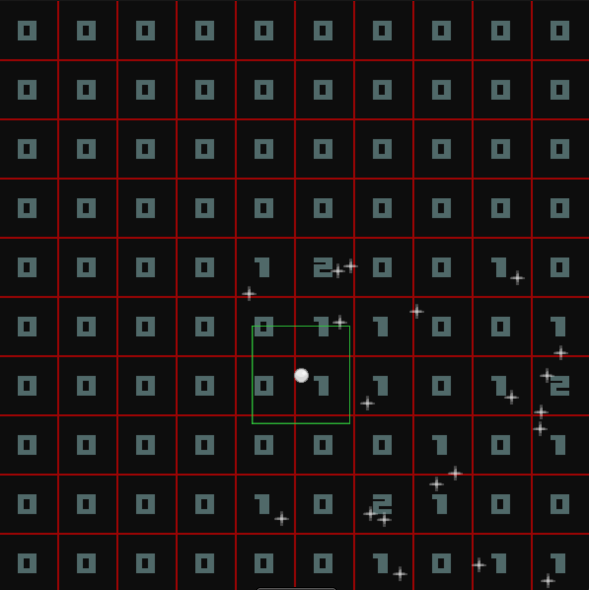
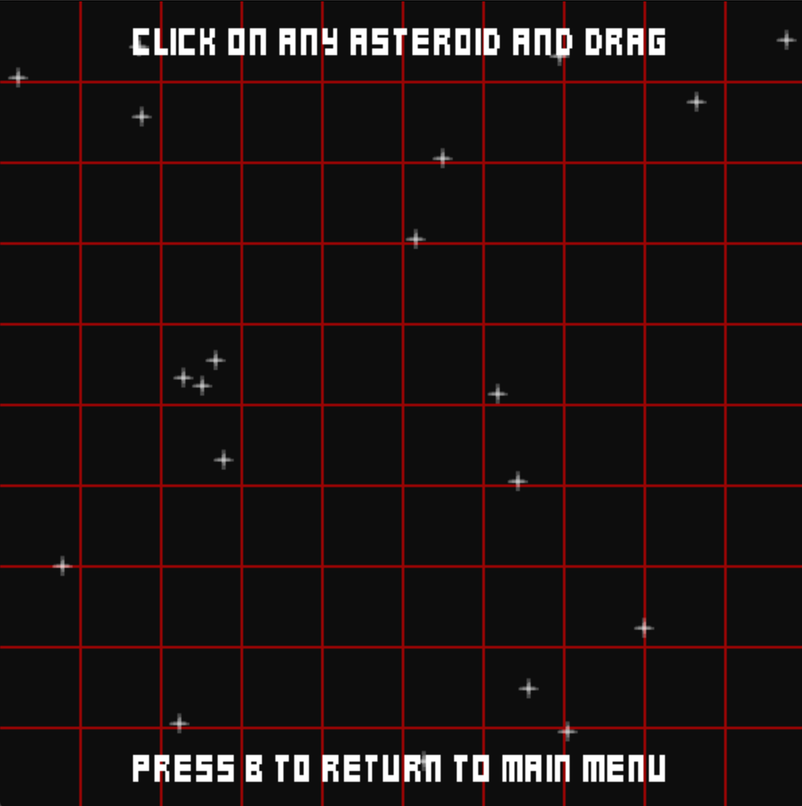
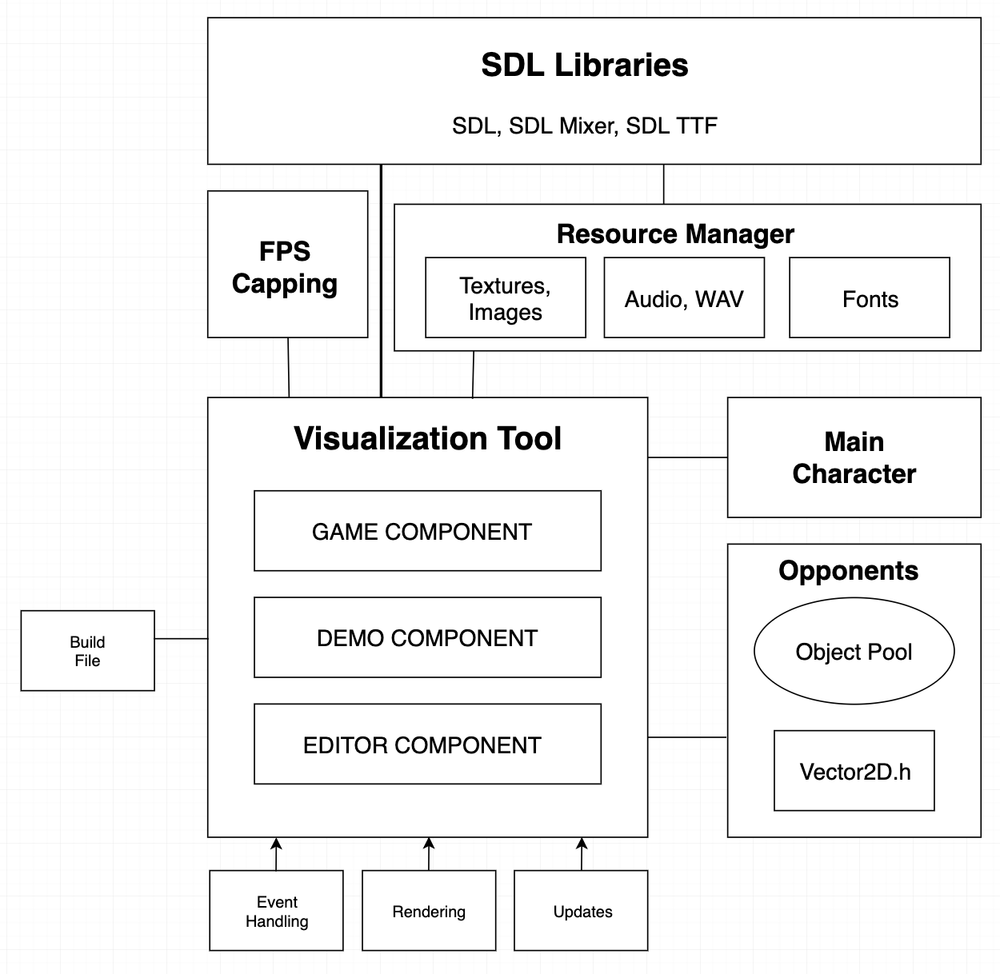

How to compile and run if Binary does not work (SDL Libraries (SDL, SDL Mixer, SDL image, SDL TTF) may need to be installed locally)
1. Clone Github Repository locally
2. Navigate to ../Project/SP-Viz/temp directory
3. Enter "python build.py".
4. Run "SP-Visualizer" locally"
Video Demo
Project Screenshots

Play the classic Asteroids game
Using the classic game Asteroids as a way of displaying how spatial partitioning works

Utilize the Demo tool
Visualize a 2D grid which tracks the number of objects occupying certain areas of the game space

Edit the Scene
Drag and drop each individual asteroid to set up the level as you please
Further Comments on Each Component of the Tool
Explaining each component of the tool
Asteroids Game: This is a simple implementation of the classic Asteroids game. The user can achieve a high score. The game ends once a collision occurs between the main character and any of the opponents.
Spatial Partitioning Demo: This component is used to display how many game objects occupy certain areas of the game scene. It renders the numbers in each square in the grid dynamically as objects pass through. The green grid that surrounds the main character is meant to represent a range in which it could possibly interact with the current scene. A key element of spatial partitioning is emphasizing elements closer to the main character -- this helps with overall performance.
Editor Component: This part of the project allows the user to drag and drop the location of any of the opponents. Both of the other components will then operate with the opponents in their new given locations.
Project Structure
The following diagram (while not an exact UML diagram) illustrates the important aspects and components of the project. The project is heavily dependent on multiple SDL Libraries, and is mainly centered around the Tool.cpp file.

Explanation of Spatial Partitioning
What is it? Why does it matter? How is this demo applicable?
Spatial partitioning is a method used in games to efficiently store and evaluate data based on their locations. It can greatly assist with performance, as more emphasis can be put on objects closer to the main focal point of the game, giving the user a better experience.
In games, spatial partitioning is implemented using specific data structures, such as grids (2D arrays), quadtrees (nodes with 4 children), or binary space partitioning trees (BSPs operate with a nearest-neighbor type behavior). By having the location of objects organized in a well-structured manner, updates and events can be prioritized in which are closer to the main character. In general, this can minimize the complexity of updating the game, as travesing relevant objects can occur faster.
My demo uses a grid-like data structure to show how many objects are located within a certain index at a certain time. The main character has an arbitrary sized green box around it, symbolizing the potential surrounding distance that could be relevant at a given time as the character moves. Since this visualization is able to record the given number of objects in a location at a time, the code could be modified and used within a game to further implement aspects of spatial partitioning.
Post Mortem Review
A Reflection On My Final Project
Creating this tool was a fun and educational experience; however, there was still a decent amount of work I wish I could've implemented.
One important part of spatial partitioning is the emphasis of sub-division of the space. My visualization uniformly divides the space, whereas, a more accurate depiction would subdivide the spaces closer to the main character into even smaller spaces. Also, I would've liked to implement the demo with a few different data structures that are used. Perhaps trying some form of a search tree, rather than just a grid, to render parts of the window would've been interesting to implement.
I also wished that I could've implemented some form of dynamic loading (e.g. loading by chunks) in my demo. I think it could've been interesting to have a toggle view, where the only elements rendered in the scene were those that had been visited by the main character -- rather than the whole scene being rendered at once.
I definitely faced a lot of challenges with the timeline of this assignment as well. Since I was fairly interested in this topic, I did decide to leave a team of 4 with only ~10 days remaining until the deadline. While I felt a bit more agile as a one-person team, I did feel somewhat pressured by the deadline while working by myself. Also, I did feel that there are aspects of my submission that are lacking -- especially the size of the Tool.cpp file, and the lack of smaller functions, and files, that could've made the code more readable.
Overall, I am happy with what I have made, and I hope it conveys in an understandable manner the importance of spatial partitioning.